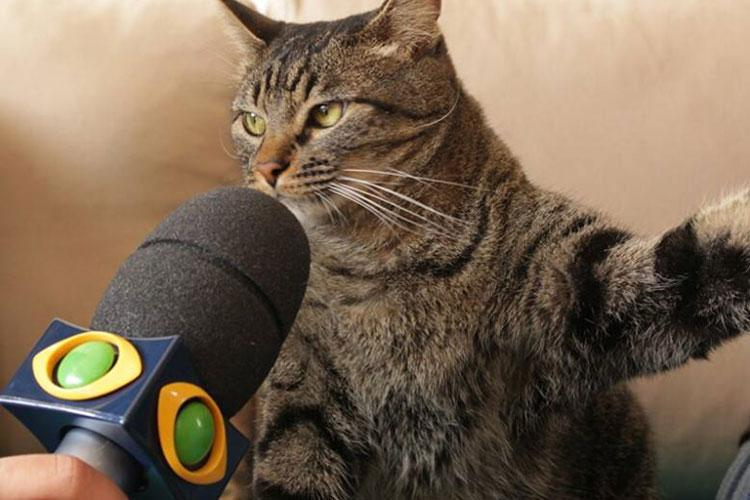

Gatos Otários
-

-

- 
-

-

Gato Pidão
Os Gatos Pidões (Pidoes Gatineus) são uma espécie muito comum, que possuem olhos grandes, carinha de coitado e orelinhas fofas.
Também apresentam como particularidade suas pálpebras tristes, semelhantes às de quem está passando fome.
Pesquisas apontam que dentre 10 gatos domésticos, 8 são da espécie Gatos Pidões.
Gato Jurado Masterchef
Essa espécie de gato (Masterichifes Juradis Gatineus) é a mais exigente de todas! Não importa se você sirva ração seca de péssima qualidade ou ração húmida de 20 reais o sachê: o Gato Jurado Masterchef não vai gostar de nenhuma.
Também apresentam como particularidade o vômito constante, visto que são muito enjoados.
Os pais de pet relatam que esse tipo de gato é muito complicado de agradar. Gastam fortunas em comidas fancy e petiscos e o animal se recusa a comer.
Essa espécie, entretanto, comumente possui hábitos alimentares esquisitos como: lamber sacola, comer papel higiênico ou farelos de pão e mastigar cabelo.
Gato Fofoqueiro
Os Gatos Fofoqueiros (Fofoquirem Gatineus) possuem hábitos peculiares. Eles gostam de passar horas na janela observando a vida alheia e julgando à todos que aparecem em sua visão.
São frequentemente vistos dando entrevistas ou escrevendo artigos de fofoca na internet.
Uma pesquisa aponta que essa espécie evoluiu de um gato comum, que ao conviver com humanos fofoqueiros, desenvolveram hábitos e características semelhantes aos donos.
Gato Enjoado
Gato Enjoado ou Gatineus Enjoadenes, é uma espécie muito semelhante ao Gato Jurado Masterchef: nada os agrada!
A diferença principal está no comportamento: os Gatos Enjoados vomitam todos os dias e fazem cara de ânsia ao menos 5x ao dia!
Muito comum na região dos Alpes Albinos, essa espécie de animal ganhou popularidade na internet pelas caretas hilárias que faz. Alguns donos dizem ter ficado milionários apenas postando vídeos e imagens de seus Gatos Enjoados.
Gato Triste
A espécie Gato Triste (Tristonhos Gatineus) é a mais depressiva de todas: choram com frequência e vivem se lamentando pelos cantos.
Especialistas veterinários estão trabalhando em uma pesquisa para desenvolver antidepressivos de uso gatinal para essa espécie. Fórmulas de medicamentos como Gratac, Escitalogato e Gatralina já estão em fase de testes.
Apesar de tristes, são uma ótima companhia: carinhosos e fofinhos, estão sempre no seu pé.
FAQ
- Qual o gato mais otário?
- Sem dúvida, o gato mais otário é o Gato Jurado Masterchef: metido e enjoadinho!
- Eles são fantásticos?
- Apesar de muito otários, todos os gatos são fantásticos.
- Qual a melhor espécie?
- A melhor espécie é a Gatos Tristes por serem fofinhos e quietos.
- Como proteger?
- Adote, não compre! E dê raçãozinha.
Contato

- naoentre@emcontato.com
- +55 (99) 9999-9999
- Rua dos Gatos Gatinhos, 777
- Alpes Albinos - AA